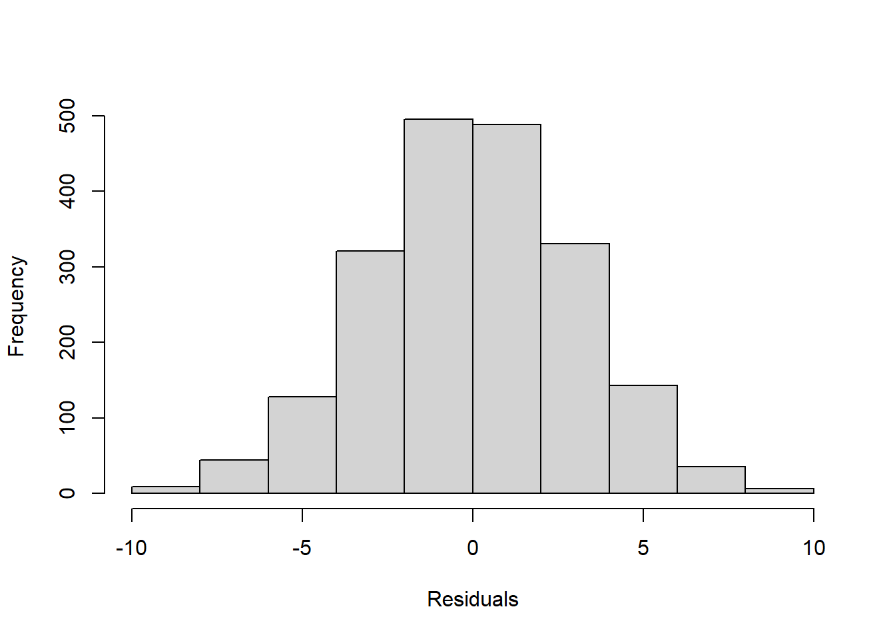

Chapter 6 Hands On Regression
Here we come up wit a story… an example about regression.
A simple regression is just the situation where we want to model a response variable as a function of a single explanatory variable. As an examples, say, the time a fish takes to react to a predator introduced in an aquarium by getting into shelter, as a function of the water temperature. Let’s simulate some data that would represent this scenario, but I am not showing you the way the data was simulated just yet.
Nonetheless, let me tell you that the reaction times were created in object react, the temperatures in object temp, and these were then packed as a data.frame called reaction.
The first few lines of the simulated data are shown in Table 6.1.
| react | temp |
|---|---|
| 3.864305 | 11.84882 |
| 6.002570 | 17.02374 |
| 5.400667 | 15.73326 |
| 4.462596 | 11.68052 |
| 6.689445 | 19.43839 |
The data is shown in figure 6.1.
par(mar = c(4, 4, .1, .1))
plot(react~temp,xlab="Temperature (degrees, Celcius)",ylab="Reaction time (seconds)")Figure 6.1: An example regression data set that could be eplained by a linear regression
It seems like there is a linear relationship between the predictor (temperature) and the response (the reaction time). We could therepore model it with a simple linear regression. We can do that using R´s function lm. We do so here and then look at the summary of the object produced.
The required argument for lm is the formula that defines the regression model. The symbol ~is used to represent “as a function of”. So here we will want something like “reaction time ~ water temperature”.
While this might seem like a detail, it is a good policy to always fit models using explicitly the data argument, instead of fitting the model to objects hanging around the workspace. Learn how to be tidy!
Therefore, while the imideate result would be the same, we suggest that you do not do this
nor this
but always consider this
##
## Call:
## lm(formula = react ~ temp, data = reaction)
##
## Residuals:
## Min 1Q Median 3Q Max
## -0.43172 -0.13223 -0.01381 0.13843 0.49265
##
## Coefficients:
## Estimate Std. Error t value Pr(>|t|)
## (Intercept) 0.55487 0.15642 3.547 0.000881 ***
## temp 0.31442 0.01015 30.986 < 2e-16 ***
## ---
## Signif. codes: 0 '***' 0.001 '**' 0.01 '*' 0.05 '.' 0.1 ' ' 1
##
## Residual standard error: 0.2182 on 48 degrees of freedom
## Multiple R-squared: 0.9524, Adjusted R-squared: 0.9514
## F-statistic: 960.2 on 1 and 48 DF, p-value: < 2.2e-16This will be easier to read for others, makes you tidy, and will save you headaches when using functions like predict over the resulting fitted model.
We can the estimated regression line to the above plot. I color it red to remind us of the fact that this is an estimated line, not the true line that generated the data. While in general we do not know this with real data, here I know the model that was used to simulate the data. Just for comparison I can add it to the plot to compare with the estimated regression line.
plot(react~temp,xlab="Temperature (degrees, Celcius)",ylab="Reaction time (seconds)")
abline(mod0,lty=2,col="red")
abline(beta0,beta1,lty=2,col="green")
legend("topleft",legend=c("Real model","Estimated Regression Line"),col=c("green","red"),lty=2, inset=0.05)
The estimated line and the true line are very similar, as expected since we have a reasonable sample size, a small error, and a model that is the reality. With real data, this will be the exception, not the rule. All models are wrong, but some are useful. The linear regression model is perhaps one of the simplest, but also one of the most widely used, and hence, one of those that has been extremely useful. But of course, its simplicity is also its major disadvantage, as we shall see.
6.1 The assumptions are on the residuals, not the data
Imagine that you have a single variable that you are interested in modelling. This is the concentration of an enzime in the blood of small rodents, from 4 diffferent species. This is represented in the image below 6.2.
Figure 6.2: Concentration of an enzime (mg/L) in the blood of small rodents, from 4 diffferent species
A poor (conventional and traditional) biologist would die if shown this dataset, but the truth is there would be no reason for it. If one accounts for the different species, this is what we see. Clear differences between two groups of species.
And further, we can see that the remaining residuals are a beautiful Gaussian. Not a surprise, since this was simulated data, from a Gaussian model :) !

The take home message from the story: what the data looks like might be irrelevant. The patterns that remain in the residuals, if any, those are the ones we might need to worry about. So do not transform data just becasue the data looks odd. It might just be Gaussian data in disguise!